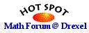

|
My Experience with Sage:
Sage rocks! I was able to do everything I'd done with Mathematica,
only better!
Sage is one of the well designed approaches to blur the boundaries
among being a user, developer and contributor in the open-source
ecosystem. Probably I will be hanging around for a long time be it
bugging, complaining, documenting, adding content and eventually
digging into source codes ;)
By the way, I have lots of students who have really enjoyed learning
SAGE this semester. It's great to come to class and see someone
working in a SAGE notebook, instead of surfing the web or reading
email.
Ben Woodruff, 2009-12-12, email
|
From my point of view Sage definitely has *not* failed! I would not be able to do the computations I need
for my research on any other platform at this point (of course this could be possibly done, but with an enormous
effort). More and more people are interested in switching to Sage at least people with a focus in
combinatorics, representation theory, root systems, .... and are offering to organize Sage Days to learn
and start using and contributing to Sage. In fact, we just concluded Sage Days in India and there were
people interested in a variety of topics. From this point of view, Sage has gone far beyond any other
mathematical software system I know!
After typing in "ode_solve", the tab-
completion guided me to the class "ode_solver", which also works like
a charm. This is the reason for my late reply: I was so glad to get
everything working that I lost all track of time...
I know this is not the place for a panegyric on Sage, but I've been playing around with Sage for only a week and it is amazing. I'm behind on all my work while I'm redoing all my code in Sage, and I even wrote a small differential forms package, all in one week :) Thanks a lot!
SAGE is a work of art! It has very clean syntax, extremely well
documented and the coding is very clean. An average python programmer
like myself could create new functions in SAGE. I've always wanted
something like MATLAB but the price tag is a bit well ... pricey for a
12 year old. SAGE fits the bill perfectly. Thank you so much for SAGE!
12-year old Dhaivat Pandya, 2009-12-13
|
|
I want to thank you, and the developers of the opensource-librarys which Sage is using, for their great work!
Sage is easy to use and very powerful. And I like the server-client-principe behind it.
Go on with the great work, Sage motivated me to make the step from C to python in just some hours.
Working with the R
environment and especially the SEM package for R is not something I am
looking forward to after using Wolfram Mathematica and sagemath for a
while. I find these tools to be a lot more intuitive when coding as
well as providing better options for graphs and visualization.
Dan-Erik, 2009-09-05, e-mail
|
Thanks a lots for and for the instructions to insert a patch. I would
have not never thought it was so easy to insert a patch in Sage!!!!! You
save me a lot of time !!!
And even the code inserted in the patch does not look to difficult... I am looking forward to collaborating with Sage. Thanks a lot!
Jose Guzman, e-mail, 2009-07-27
I was able to compile sage-3.4 on the OLPC XO. It took 3 days !!
[...] I am always amazed that sage incorporated so many different packages
so seamlessly. In my little exercise with the XO, I studied sage-
spkg and some of
the spkg-install and setup files and am further impressed !!
Thank you !!
Elizabeth Dembart, e-mail, 2009-07-29
|
I'm working on modeling the efficacy of a hypothetical infectious vaccine (like the live
polio vaccine). I have lots of small coding chunks that makes the sage notebook great for
working through each section of the problem. Sage including Sop and networkx has eliminated a
lot of the tedium I would have had to churn through otherwise, while native plotting allows
easy visualization.
An earlier implementation in Mathematica 6.0 was orders of magnitude slower for a simpler simulation. While neither implementation was optimized, my first pass in Python/Sage was much more effective, and easier to write and understand. |
I needed to do some lengthy calculations using the symbolic math capabilities of Sage. Using
Python's built-in data structures, I could easily store partial results, which let me
stop and restart my computations. Getting up to speed with Sage was easy since I already knew
Python.
SAGE is doing remarkably well at keeping a balance between ease-of- use for beginners and
high-end users.
|
|
I have just used Sage for one day, and I was disappointed by this side- effect. But with such
an outstanding support, I'm now convinced it's the tool to use!
Sage brought me back to using linux, perhaps permanently this time.
I only use windows for games these days. I actually haven't used Sage very much recently.
I'm doing stock trading strategies and I was using R. But every time I left R for a while and came back,
it seemed like i had to relearn it over again. Sage helped me to see how much simpler just doing it in python is,
and I find that I only really need numpy and matplotlib with pyplot for what I'm doing,
mostly simple calculations on stock data. Although it's nice to know Sage is there if I need it.
Robert Schmidt, e-mail, 2009-11-22
|
I am a PhD student of astrophysics (theory and observations of radio recombination lines) and
recently started using web-based Sage to explore a a mathematical aspect of my topic. I have
gotten more done on this topic using Sage than I thought possible...
As previous user of matlab and maple and a current user of scilab, I find Sage a great evolutionary step forward!
Jordan Alexander, 2009-07-04
Sorry for the noise - I realized this is utterly trivial.
BTW, sage is one of the best tools I have ever used. You guys have done a huge service to the mathematics community.
Jeff Stroomers,
sage-support, 2009-12-25
|
|
I’ve spent about 10 minutes with [Sage] running and am VERY impressed. It is VERY useful at
the level I teach at (Algebra II mostly), but has power well beyond calculus.
|
The crucial part that makes me a Sage user is the ability to use Sage from simple Python
script. This makes it easy to keep all my user code in version control and manage it with
programming tools.
|
|
Take the elliptic curve E:y^2=x^3-34790720*x+78984748304. This elliptic curve has CM by the
ring of integer of the quadratic field Q(sqrt(-163)).
Compute:
SAGE was able to factorize my polynomial and recognize if an element over a field of degree 81 was an square! It was something close to a miracle! And the best thing is that I obtained what I was expecting!
Enrique Gonzalez Jimenez, e-mail
The model I am reimplementing and extending was written in a dialect of BASIC, QuickBASIC I
think, in the late 80s and carefully backed up onto now-unreadable 5 1/4" floppies.
After playing around with writing the program in Scilab, I reviewed my methodology and
realised I wanted to have something that is more reproducable in the future with regards test
runs and results. NetCDF support is available with Python. Rather than building my own Python
development environment I remembered a colleague had talked about Sage. The model need to
write as well as read NetCDF files, so I am building NetCDF and pycdf packages for Sage.
Anthony David, 2009-05-30
|
In my opinion, SAGE's notebook is the real killer feature, which I don't recall to
have seen in any other (commercial or not) software. I mean, this is the only scientific
program that I've found, allowing such an easy collaborative job within local networks,
something that is not comparable to any kind of subversioning software or stuff like that.
The only idea that I can access my data from abroad (if needed) by setting up a SAGE server
makes me happy. Moreover, the nice interface is valuable as well, like the presentation of
results in latex format.
I know that interfaces are not really scientists' job, but having a good one is a real step ahead. And plot interactivity is a one million dollar feature for people who deal with design and system performance evaluation.
>> 3D interactivity. Here are a few simple
>> examples from Ondrej's site
>> that I made from some mlab examples:
>> http://nb.hpfem.org/home/pub/16
> Awesome!! Thanks, yes, the sage
notebook is awesome!
While I have not yet used your software in a critical way, I will, and am very impressed and
appreciative of what you have created with Sage. I look forward to supporting your
project in the future. [...]
Your team is developing a very professional product, and one whose time has come. Sincerely, -Frank |
|
The fact it is an open-source alternative to Mathematica. I work as an engineering contractor
and need to submit work to my clients. Sending them Mathematica notebooks and saying
"buy a copy of Mathematica to look at them" really does not work. I find it
annoying Mathematica charges even more in the UK than in the USA (about 50% more), does not
update the Unix versions as often as the Windows ones (despite charging more). Overall,
Wolfram Research are in some ways Sage's best friend!
|
It's absolutely like just the most awesome thing ever. A *Python* based front-end to
*Free Software* science & math packages including both a scriptable shell *ipython*, a
*web-based* front-end and security and collaboration built-in from the start, easy-to-teach,
easy-to-optimize, scalable, latex & bibtex integration, soon it will write your papers
for you. ZOMGWTFBBQ!!
|
|
Sage has the broadest range, by far, of any mathematics software system I have used. I really
like having Python as the primary programming language, especially as it makes it easy to
incorporate other small programs I have lying around. Finally, introspection and
tab-completion rock. Despite it's rough edges, it has become the tool of choice for my
research, even when it might make more sense to use Magma or Mathematica.
|
It does not cost $2000 or even $150 for academic version. Community is very helpful, most
questions can be resolved in 24 hours and when there are bugs, they are fixed quite fast as
well. It works under any system in the same way through a browser. It is much more pleasant
to write actual programs for Sage then, for example, Maple, because of the chosen [Python]
language.
|
|
I really really love the "playground" aspect of Sage. That part is great, great,
great, great, great. A big mathematical playground :-)
|
The use of a regular programming language as a scripting engine (especially such a good one
as Python), notebook interface, good exact linear algebra package, that is platform agnostic
and open source.
|
|
A lot of things! I guess the best thing is to be able to use one language only, and a very
good one, to call all these other lovely programs like GAP, pari, Singular, etc... Python is
simply much more powerful than the scripting languages used by other algebra packages, and of
course it is very easy to learn.
It is a vastly better "overall" system to use than anything else. Python for all
its quirks is a real language that I can be highly productive in. The notebook is incredibly
useful in practice. The tight integration with and support of Cython is amazing.
|
1. The open, friendly, thriving development community: I get a LOT of information just by
googling the discussion groups.
2. The wide number of packages included in the Sage umbrella. 3. The fact that it uses a standard programming language and allows me to interface with lots of different packages without having to learn the language of each separately. I personally think that Sage is a major milestone for Mathematics. I applaud Prof. Stein and the numerous other volunteers who have made Sage possible. Thank you!!! Thank you all!!! And thank you to the maintainers of all the packages that go into Sage! I know that many of them have labored, often unfunded, in relative obscurity to make mathematics better for all of us. |
|
It's free and it uses Python. The system is so comprehensive, that I almost always find
what I need in SAGE for my work. Many thanks to your team. You guys have built a dependent
and respectable tool. I find myself using it more and more all the time. Keep up the A+ work.
|
The whole concept - PERFECT for education!
I teach secondary math, and this year I am going to systematically integrate the use of Python/Sage in my classes. I am going to make it a standard that we express our thinking in a computational language whenever appropriate. |
|
It is often unexpectedly fast.
The notebook interface has some killer features. I love that it saves revisions of my
documents with 0 effort. I haven't actually shared any documents yet, but I'm excited
about how easy I expect it will be to show stuff to my collaborators. Tab completion and the
"function?" [help] feature are great. I'm really impressed that interact seems
to be so far along so soon after Wolfram introduced Manipulate. I haven't used interact
much yet, but I've found Manipulate to be very helpful for wrapping my head around
certain problems. The community and the attitude of Sage are very encouraging. Seems like a
good balance of pragmatism and principles.
|
I love the speed, and how it finally is starting to bring everything together. I love that it
uses python so I don't have to use a new language. I love the idea of being able to
compile everything to make it run faster. I love that I can call matlab scripts, or maple,
etc... easily that is great. I love the marriage of programming and algebraic math problem
solving.
Keep up the good work. I can't wait until this is the only program I use for all of my research and programming needs. The potential is amazing, really.
Wraps most things a biologist could ever want for various problems, be it analytical
modeling, simulations, or data analysis.
|
|
The basic approach "standing on the toes of giants" and "not reinventing the
wheel" is very promising. I like open source very much - that way i can learn from the
code that other people wrote. I love Cython - combining nice syntax with considerable speed.
Also the society is very responsive.
|
Versatility, open nature, bright perspective
you guys rock thank you and never ever drop the project I will try to find $one million to support you! |
|
I like the freedom to experiment and the flexibility to use the right tool for what I want to
do. I also love the notebook interface, it makes writing self documenting code easy and
allows me to communicate what I am doing to other people.
|
The fact that Sage is open source make it transparent to see how the calculations were made.
The commercial systems are like a black box, not knowing exactly how the calculations were
made is just not acceptable when you are doing research.
|
|
In teaching:
I used SAGE for some sections of a differential equations course I was teaching last fall. Wasn't sure if the students would just "take the hit" and refuse to learn SAGE so I made the assignments worth very little and very easy. Also, I made extra assignments for extra credit. It turned out not only did most do the assignment but a lot more than I expected did the extra credit ones too and say that they liked SAGE and its philosophy. I would call it a success in teaching. In research: I wrote some time ago a procedure for computing Duursma zeta functions of a linear error-correcting code. AFAIK, no other program does this (not GUAVA nor MAGMA, ...). These zeta functions are very similar to the zeta function of a curve (they have a functional equation, a "Riemann hypothesis", etc), except that no one knows why the "Riemann hypothesis" doesn't always hold. There is a conjecture that it holds for a certain "extremal" class of codes, so maybe the RH holds for "good" or "optimal" codes (since optimal codes are sometimes extremal)? A year or 2 ago, I found an example of a formally self-dual with optimal parameters which violates the RH. I would call that a success in research. |
Why Sage is useful for me.
I have a program that I do for my master thesis, it's some finite elements method + electronic structure calculations [on] some very fast Solaris boxes. I just remember I gave up installing scipy+umfpack on some old Debian boxes in Munich, so I just installed Sage instead. — [If one] of the aims of Sage is to be a viable alternative to Matlab, so that's about it. Sage Solaris port +1! [Maybe] I'll be teaching some undergrad calculus stuff in a year or two and so I was thinking which programs I'd use and the constraint will probably be Windows. Installing python+sympy in Windows is not convenient — it's about 10 clicks with mouse and it installs somewhere to C:\Python2.5 by default and I don't understand Windows much but I just get the feeling that it messes up with the registry as well and I don't like this at all. So, Sage Windows port +1 as well!
You guys are awesome, I ported my code to Sage in maybe a week, and added multi-processing
today. Now I'm working all 8 cores, using a real programming language, and getting
super-high-precision calculations... incredible!
#sage-support IRC channel, 2008-12-11
|
|
Project:
Computation of cohomology rings of finite p-groups with coefficients in GF(p) How Sage and its components were used:
|
Hi. There is a simple saying: ““If you can count to ten you can count to infinity really” to
motivate six year olds. Let’s now move on by motivating all ages using SAGE. I just give
examples and not lines of code, mainly because to promote the usage of SAGE and to encourage
others to check the results found.
1. After counting we learn our youngsters to use "*","+","-". Not always easy to find motivating exercises. The following question proved to be fun for either an individual or a group. Especially in cases where people had to wait for one hour or longer, e.g. bus trip et cetera. a. Easy start. Take the for instance the numbers 3,5,7,8. The challenge is: make as many numbers as possible (i) starting from 0, (ii) you may use each number only once, and (iii) using the three operands "*","+","-". The amazing fact is that you can produce consecutive numbers in the range 0..65. The following output comes from a SAGE notebook: 1 = 3+5-7 , 2 = 3+7-8 , 3 = 3 , 4 = 3+8-7 , 5 = 5 , 6 = 3+8-5 , 7 = 7 , 8 = 8 , 9 = 3+5-7+8 , [...] b. Less easy. Is 3,5,7,8 the best 4-tuple? Two ways to answer this using SAGE: i. All (reasonable) combinations of 4 different numbers ii. Hard: Prove it by (a) produce symbolic expressions – there are many! – and (b) just try to solve them. c. You can play around by also allowing other operands like “/”, “^”, “mod or % in SAGE”, or you can allow also negative numbers and look for the longest consecutive row. In the case of 3,5,7,8 and the three operands "*","+","-" I found 94 consecutive numbers. d. If you add “^” (so 2^3=8), you find that the 4-tuple 2,3,7,8 delivers a nice row of numbers 0..75 as the following SAGE output shows: 1 = 2**3-7 , 2 = 2 , 3 = 3 , 4 = 2+3+7-8 , 5 = 2*3+7-8 , 6 = 2*3 , 7 = 7 , 8 = 8 , 9 = 2**3-7+8 , [...] e. Allowing negative numbers, I found that 103 consecutive numbers can be produced. Such an exercise proved to be fun with motivated adults and some good drinks. 2. Playing around with four number is relatively easy. More difficult is the 5-tuple question, even in the simple case by only allowing the operands "*","+","-". The reason is mainly because the number of possibilities ‘explodes’. To conclude: SAGE helped me to find relative simple exercises and questions to motivate people of all ages (i) to do exercises “using pen and paper”, and (ii) to become aware of the depth of even simple mathematics. I learned from SAGE that “mathematics on a computer is even better then gaming”. |
|
The Good:
I believe I already made it clear which are the things Sage excels at, but a short summing up would be in order at this point. First, it's a completely capable IDE that can help you in various ways; secondly, it has an intuitive interface and, last but certainly not least, it comes with a well written documentation. The Bad: Other than the fact that its most advanced functions are truly inaccessible to someone who doesn't have the right academic background, I didn't find anything not to my liking. May I remind you that I tried as best as I could to view this software from the perspective of someone who had at least a general idea of the matter.
Math Geek Software Smackdown: Sage v. Mathematica
A movement is afoot among some mathematicians in academia to make the switch from expensive, closed-source calculation software to free, open-source alternatives. [I]n [William] Stein's eyes, [...] [t]ransparency is essential in the peer review process for new theorems, and since most of the major math programs are closed source, there's no way for researchers to study the code used to get a result. Open-source software makes that process totally transparent. |
Sage picked as the Hot Spot of the month in November 2008 by mathforum.org:

One aspect of Sage I find particularly intriguing is the "notebook" interface,
which runs in a web browser. Factoring a polynomial feels just like shopping at Amazon.
Moreover, the interface is exactly the same whether the browser is connected to a locally
installed copy of Sage or to a remote server. (There's a public Sage server at www.sagenb.org). This is surely the way of the future.
I actually really felt positive about this whole example as I really learned a lot more.
[...] The more that I worked in [S]age the more comfortable I felt as well. The geographic
projection issue is still there, as well as some indexing speed issues, but overall, I was
really impressed with the Sage/SciPy/NumPy experience today.
Overall I feel that more of a transition was made for me last night/today. Which was great timing as a co-worker actually called me and asked if I knew of any free replacements for Matlab... |
|
A new open source mathematics program is looking to push aside commercial software commonly
used in mathematics education, in large government laboratories and in math-intensive
research. The program's backers say the software, called Sage, can do anything from
mapping a 12-dimensional object to calculating rainfall patterns under global warming.
|
The real power of Sage appears to lie in its ability to handle programs written in Python,
again untying math students and researchers from proprietary interfaces and languages.
"I think we can be better than the commercial versions," he [William Stein] said.
"I really want it to be the best mathematical software in the world."
|
|
SAGE (United States) put forward by William Stein
SAGE makes it possible to study and use a huge range of mathematics, including algebra, calculus, number theory, graph theory, exact linear algebra, etc. |
Open-source software, which distributes programs and all their underlying code for free, is
increasingly used in everyday applications. [...] But until recently, nobody had done the
same for the everyday tools used in mathematics.
Sage can take the place of commercial software commonly used in mathematics education, in large government laboratories and in math-intensive research. The program can do anything from mapping a 12-dimensional object to calculating rainfall patterns under global warming. |